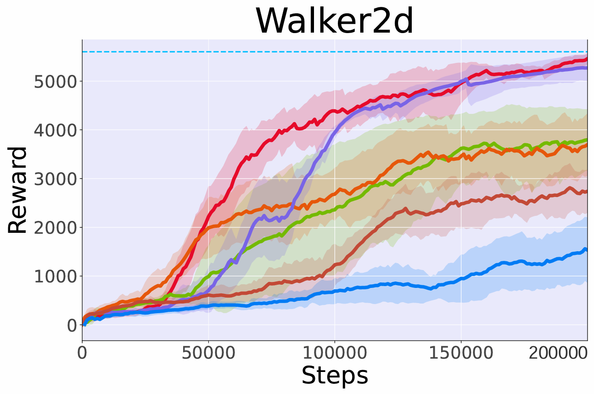
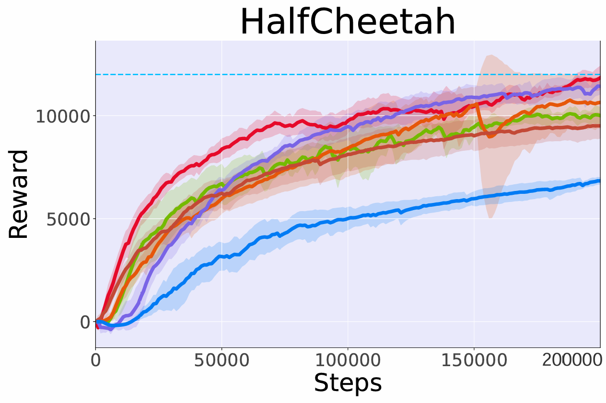

Controllable Flow Matching for Online Reinforcement Learning
Motivation and Innovation
Motivation
Conditional Flow Matching (CFM) models, particularly those based on continuous normalized flows,
have demonstrated remarkable success in image synthesis. Recently, researchers have begun adapting CFM models
for decision-making tasks, leveraging their strong planning capabilities in offline reinforcement learning (RL).
However, their potential in online RL settings remains largely unexplored. Model-based RL (MBRL) methods always face the challenge of
accumulation errors when they try to rollouts. These errors arise because small inaccuracies in the
learned dynamics model propagate over time, leading to increasingly unrealistic predictions.
However, if we bypass step-by-step prediction of the environment dynamics and instead directly
generate full trajectories, we can avoid the problem of error accumulation.
Innovation
We propose the first flow matching method for online RL that works on the trajectory-level data generation,
effectively solving the error accumulation problem inherent in step-by-step generation approaches.
Through the novel introduction of a Gramian matrix control module, our method significantly enhances the model's adaptability to Markovian trajectory distributions while ensuring efficient and stable generation.
We design an energy-based trajectory optimization method that achieves aligned generation of high-return trajectories through guidance vector fields.
We evaluate CtrlFlow on MuJoCo benchmark tasks and all experiments followed the Dyna-style paradigm. The results demonstrate that our method exhibits superior performance and better convergence than compared MBRL approaches.
The overall of our proposed CtrlFlow.
Evaluation Environment
 Hopper
Hopper
 Walker2d
Walker2d
 HalfCheetah
HalfCheetah
 InvertedPendulum
InvertedPendulum
Experimental Result


The performance of CtrlFlow compared with model-based and free (SAC) methods.